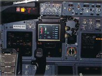
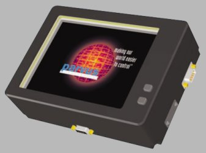
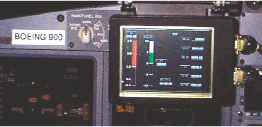
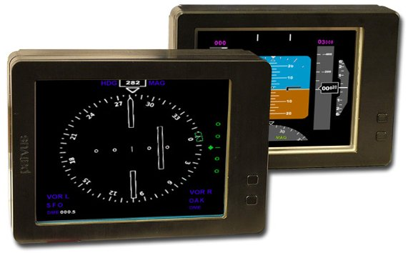
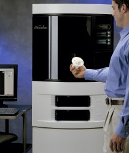

|
 Kokpit
Gösterge Sistemleri Projesi Rekor Zamanda Hayata Geçti:
Kokpit
Gösterge Sistemleri Projesi Rekor Zamanda Hayata Geçti:
Parvus
Corporation, iletiþim, kontrol ve elektronik ürünleri tasarlayan
ve imal eden bir firmadýr. Boeing 737-900 için ürettikleri
düz ekran LCD'lerin prototip üretimini kolaylaþtýrmak, ve
tasarým sürecini kýsaltmak amacýyla yola çýkan Parvus mühendisleri,
prototipleme aþamasý için Dimension 3D Printer'ý tercih ettiler.
Dimension
3D Printer kullanýlarak üretilen modeller, deneyimli CAM mühendislerine
ve hassas ama hýzlý bir üretim kapasitesine olan ihtiyacý
azaltarak Parvus'u büyük bir yükten kurtardý. Tasarým sürecinin
5 hafta sürmesi tahmin edilirken, süreç 1 hafta içerisinde
tamamlandý. Dimension 3D Printer sayesinde Parvus, personelini
ve kaynaklarýný daha verimli bir þekilde kullanarak kapasitesini
arttýrmayý baþardý.
Dimension
3D Printer sayesinde Parvus tasarýmcýlarý, üretim esnasýnda
pek çok engeli kolaylýkla aþtýlar ve tasarýmý CNC imalatýyla
yapabileceklerinden %80 daha kýsa zamanda bitirdiler.
Parvus
Genel Müdürü Troy Takach'e göre, Dimension 3D Printer'ýn Parvus'taki
baþarýsýnýn sýrrý kolay kullanýmýnda gizliydi: "Biz sadece
STL dosyalarýný 3D Printer'a gönderdik. CAD modelini hayata
geçirmek için neler yapmalýyýz diye düþünerek zaman kaybetmedik.
CNC
üretiminin tamamlanmasý için beklediðimiz ve deneyimli CAM
mühendisleri aradýðýmýz günler geride kaldý. Dimension 3D
Printer'la günde 2 ya da 3 modeli rahatlýkla üretebiliyoruz.
Tasarým ekibindeki herkes için gerekli bir makine."

Hýzlý
bir þekilde üretilen beþ adet düz ekran LCD modülünden biri
test sýrasýnda görülüyor.
-
Troy Takach "ABS parçalar birbirlerine çok iyi uyum saðladýðý
için hiç tasarým deðiþikliði yapmadan direkt üretime geçtik."

Parvus
Corporation tarafýndan seri imalata geçilen ürünlerin fotoðrafý:
6.4" Rugged LCD Module
Dimension
3D Printer, tasarýmlarý modellerken aslýna sadýk kalýr; tasarým
süresini kýsaltarak beklenenden haftalar, hatta aylar önce
projenin tamamlanabilmesini saðlar. Artýk tasarýmlarýn formu
ve fonksiyonelliði, ölçülerinin uygunluðu, ofis rahatlýðýnda
kolaylýkla test edilebilir, basýlacak bir "Print"
tuþu ile bilgisayar ekranýnda bulunan model kýsa sürede elde
tutulabilir hale getirilebilir.
Dimension
3D Printer hakkýnda:
Dimension
3D Printer, tasarým sürecinde daha etkili fikirler geliþtirilmesine
olanak saðlayan yeni nesil bir tasarým aracýdýr. 3 Boyutlu
bir printer mantýðý ile çalýþan Dimension ile, gerçek bir
mühendislik malzemesi olan ABS malzemeden 3 boyutlu prototipler
elde edilebilir.
Dimension
3D Printer, dayanýklý ABS malzemeden ürettiði prototipler
ile, tasarýmlarý doðrulama imkaný saðlamanýn yanýsýra, parçalarýn
formunu, ölçülerinin uygunluðunu ve fonksiyonelliðini test
etmeye imkan verir. Gerçek bir mühendislik plastiði olan ABS,
ardýl iþlemlere uygun, boyama ve metal kaplama gibi iþlemlerin
ardýndan son ürüne birebir benzeyen prototipler üretmeye olanak
veren bir malzemedir. Ayrýca, renkli prototipler üretmek isteyen
kullanýcýlarýna, beyaz, kýrmýzý, yeþil, mavi, siyah, gri ve
sarý olmak üzere çeþitli renk seçenekleri sunmaktadýr.
Dimension
3D Printer, ofis kullanýmý için tasarlanmýþtýr. Sistem hiçbir
gürültü yapmadan çalýþýr. Üretilen modelin, sistemin veya
bulunduðu ortamýn temizlenmesini gerektirecek hiçbir artýk
býrakmaz; özel havalandýrma tertibatý gerektirecek hiçbir
toksik atýk içermez ya da salgýlamaz. Baþýnda daima bir kullanýcýnýn
bulunmasýna gerek duyulmaz. Kullanýcý print tuþuna bastýktan
sonra ve içinde yeterli malzeme bulunduðu sürece sistem, prototipi
baþka hiçbir girdiye gerek duyulmaksýzýn üretebilir. Kesintisiz
üretim için gereken tek þey, Dimension 3D Printer'a özel 20
Amper'lik bir elektrik sigortasý ve elektrik kesintilerinden
etkilenmemek için asgari 3kVA'lik bir kesintisiz güç kaynaðýdýr.
Pazara
ulaþtýrma sürelerinin büyük önem kazandýðý günümüzde Dimension
3D Printer, tasarým süreci ve süresinden büyük tasarruf saðlar.
Konvansiyonel yöntemlerle model hazýrlama, deneme ve yanýlma
iterasyonlarýndan tasarruf saðlayarak, ürünlerin piyasaya
çok daha erken sürülebilmesine imkan verir; kullanýcýlarýnýn
kýsa sürelerde farklý tasarýmlar geliþtirebilmesine olanak
saðlar. Prototip üretimi tamamlandýktan sonra destek malzemelerinin
elle kýrýlarak modelden ayrýlmasý veya özel solüsyonunda çözünerek
temizlenmesi yeterlidir.
Dimension'ýn
kullanýcý dostu yazýlýmý Catalyst, stl uzantýlý data üretebilen
bütün CAD programlarý ile çalýþabilmektedir. Catalyst, stl
dosyalarýný alýr, modeli otomatik olarak dilimlere ayýrýr,
gerekli destek yapýsýný hesaplar ve yapý dosyalarýný oluþturur.
Kullanýcýya yalnýzca "print"e týklamak kalýr. Dimension
3D Printer network üzerinde çalýþabilen bir sistemdir. "Site"
lisansýyla gelen Catalyst yazýlýmý, bu özelliði ile kaç kiþinin
ve kimlerin dosya deðiþtirme ve sisteme parça gönderme hakkýna
sahip olacaðýnýn da network yöneticisi tarafýndan belirlenmesine
izin verir.
|
Not:
TurkCADCAM.net Dergisi
ilk sayýsýnda Dimension 3D Printer hakkýnda tanýtým
filmi ve detaylý bilgi içeren bir CD de verilecektir.
|
Daha
fazla bilgi için:
Ýrtibat:
info[+]TRON
A.Þ.
www.infotron.com.tr
Tel: (216) 651 09 55
Faks: (216) 651 09 54
|